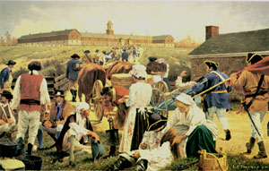

|
In the wake of the failed invasion of Canada over the winter of 1775-76, the hospital building erected during the last war was pressed into service. This large wooden H-shaped structure sat above the ridge of the Foxes Creek ravine north of the fort and was refurbished by the Albany committee. It soon was filled with sick and wounded revolutionary war soldiers. By mid-1776, Samuel Stringer, a veteran of the last colonial war and Albany's foremost physician, was serving as director of what had become the Continental hospital. Joseph Young and
Wilhelmus Mancius, Albany's other trained physicians, joined Stringer in dressing wounds, innoculating for smallpox, and training a number of apprentice surgeons including young Nicholas Schuyler who would take their places on the firing line in combat areas reaching from Valley Forge to Yorktown. The hospital was built by the British army on the side of the hill to the north of the fort first to treat soldiers wounded in General Edward Braddock's ill-fated expedition against Fort Necessity in 1754. Over the next five years, it had evolved into a large building that was a prominent feature of several subsequent maps. With the end of the fighting in New York after 1759, the soldiers moved on and the hospital was abandoned by the British. In 1765, the royal government sold the hospital and other military buildings within the city limits to the city of Albany. After the war, the hospital building fell into general disrepair. It was used for storage and space was rented to a number of individuals including the Lutheran preacher John C. Hartwick. During the Revolutionary era, the Albany hospital was a headquarters for the American medical department. With the end of the war, the military hospital fell into disuse. It seems to have fallen under the charge of the city government which entertained proposals for a variety of uses. In December 1784, assistant alderman Jellis Winne was named superintendant. ---- Decline of old hospital. Built over! notes Painting depicting sick and wounded in the aftermath of the Battle of Saratoga with the Albany hospital in the background by L. F. Tantillo. Sources: The best online resource on eighteenth century military hospitals comes from the U.S. Army. first posted 2/7/02; last revised 2/7/15
|